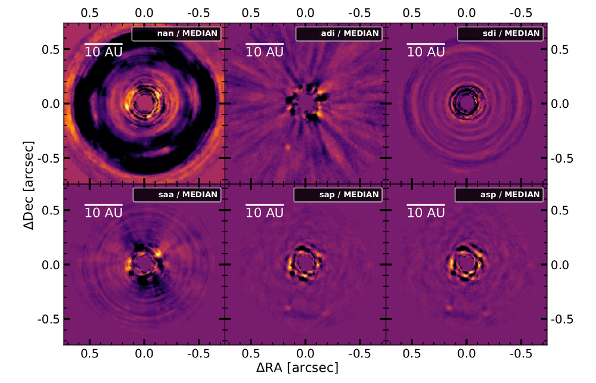
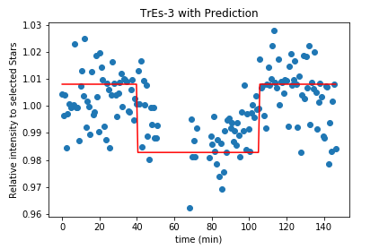

Research
Exoplanets exhibit a fascinating diversity: from small, rocky worlds to giant gaseous planets.
We are only beginning to understand their formation, atmospheres and climates, but we already have to admit that
the galaxy harbors much more diversity than we know from our own solar system. Understanding these foreign worlds
is no easy task.
With my work, I want to deepen our understanding of exoplanet atmospheres. I'm especially
interested in cloud formation and the impact of clouds on the climate of exoplanets. To combine clouds and climate,
I use disequilibrium chemistry and global cirrculation models (GCMs).
First author publications
We combine angular differnetial imaging (ADI) with spectral differential imaging (SDI) to investigate 3 different imaging techniques for spectral direct imaging: ASDI, SADI and CODI.
Using SPHERE/IFS observations we test the techniques on Beta Pictoris b, 51 Eridani b and HR 8799 e.
Our results show that combining SDI with ADI in general can help and that CODI achieves overall the best results. You can also read more about it in this nicely written blog post of David Gooding.

Co-author publications
We implemented full radiative transfer into MITgcm, creating expert/MITgcm. With it, we analysed
the temperature structure, wind structure and the dynamical heat transport of the two Hot Jupiters
HD 209458b and WASP-43b. We found that the deep layers of the two planets differ and further
observations of WASP-43b could help to explore dynamical processes in the deep atmosphere.
To analyse the impact of clouds on 3D exoplanets, implementing cloud formation into the MITgcm
is one of my core tasks for my PhD. This paper does not yet include cloud modelling, but it provides
the basis for future implementation.
Conferences & Workshops
Exoplanet 4 is an international conference about all things exoplanet. It covers fields from planet
formation to atmospheric characteristics and from models to observations. This conference was an
amazing opportunity to connect ones own research to the broader field of exoplanet science. The
conference featured various talks, poster presentations and splinter sessions. More details can be
found here.
I presented a poster on "Kinetic Nucleation in Thermal Non-Equilibrium". In this poster,
I explained the basic ideas behind kinetic nucleation, how it connects to exoplanet science and
what the effects of thermal non-equilibrium. The corresponding paper is currently in preparation.
The colloquium "Gravitational waves and exoplanets" was a one day event in Brussels. It
included talks from Gabriela Gonzalez and Jo van den Brand about gravitational waves and from Michel
Mayor and Lisa Kaltenegger about exoplanet discovery and habitability. During the event, a poster
session was held in which Belgium universities could present their work.
I presented a poster on "Kinetic Nucleation in Thermal Non-Equilibrium". In this poster,
I explained the basic ideas behind kinetic nucleation, how it connects to exoplanet science and
what the effects of thermal non-equilibrium. The corresponding paper is currently in preparation.
The second CHAMELEON school was all about the big picture. We started the week by splitting into groups
and discussing what pic picture items we would lke to see explored in the near and far future. During the
rest of the week, we were tasked to investigate a specific instrument which could be used to answer one
of these questions. Our project was titled "Planets IN Extragalactic Areas Providing Population Levels:
an Enormous Survey" - or PINEAPPLE for short. At the end of the week we presented our proposition in front
of a jury, which we managed to convince that exploring the population of extragalactic planets is an important
science question and that PINEAPPLE would be a way to answer it.
On the practice side, the workshop featured a range of talks and a hands-on session. We learned about
"The Real World of Space Missions" from Peter Roelfsema, about "The Path to Habitable Worlds"
from Aki Roberge, about HabEx and LIFE from Pieter de Visser and about METIS from Bernhard Brandl. Additionally
we enjoyed a resilience training by Karen Huizing. In the hands-on session we learned how to use Pandexo and CASA.
More details about the school can be found
here.
CHAMELEON schools are training opportunities for early stage researchers within the CHAMELOEN network. Using the diversity of skills and knowledge within the network, the schools teach key elements from different fields. In this school, we had hands-on sessions on archival data, machine learning, ARCiS, ProDiMp and GGchem. Furthermore, we learned about "Deep Learning and Kernel Machines" from Johan Suykens and about "How to keep women (and men) in science" from Petra Rudolf. We also learned about 3D modelling, cloud formation, physical structures and chemical structures. More details can be found here.
Research Projects
GCMtoolKit

Aaron Schneider, Robin Bayens, and I started developing GCMtoolKit to simplify the handling of global circulation model (GCM) data. This library should allow to easily perform basic data handling, manipulation, and plotting that everyday GCM users have to deal with. Starting from MITgcm, the goal is to support as many GCMs as possible, making the library a universal tool for the GCM community. If you are working with a GCM and would like to add it to our library, please feel free to get in touch with us so that you can also profit from GCMtoolKit.
Spectral characterization of companions around Young Suns (Master Thesis)

Even though direct imaging detection only gave us a handful of planets, they are crucial to study exoplanet characteristics. For my Master Thesis I colaborated with the Leiden Observatory which hosted my for half a year for this project. The aim of this project was to utilise the spectral information available within SPHERE/IFS observation to improve the quality of direct imaging. To this end, we tested and implemented 4 different spectral differential imaging (SDI) techniques into PynPoint. Furthermore, we looked into ways to destinguish background stars from actual exoplanets. In the end, the core of this work has been published.
Implementation and Improvement of an MCP anode (Semester Project)

Measuring fundamental particles is no easy task. Previously to this work, an MCP anode has been designed to detect the number and position of positrons. In this project, we tested the anod in 3 different set ups. This tests showed a critical design flaw in the design of the anode. The currents within the anode after a positron impacts can damage the thin carbon layer used. To prepare for future improvements of the anode we performed simulations to calculate the maximum currents that can occur within the anode. The simulations also showed that it is difficult to balance precises position determination and robustness to strong currents.
To Measure a Tranist with a 0.5m Telescope (Semester Project)

Every astronomer living in a big city knows the frustration of star-less skies. With this work we aimed to answer if an exoplanetary transit can be measured with the 0.5m Telescope at Hoengerberg in the middle of Zurich. Colaborating wiht Adrian Gheorghe, we developed python routines to read out accurate brightness measurements of stars. During a period of 6 months, we conducted 6 observation of stars with known Hot Jupiter transits. In the end, we were able to extract two reasonable transit light curves. One of these were later used in a follow up study to confirm the exoplanetary transit.